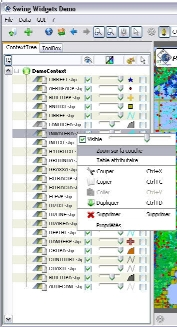

Map Out Your World with AlterSIG (Built on the NetBeans Platform)
(December 2007)
French developer Johann Sorel is the sole driver behind AlterSIG, a
Geographic Information Systems application that is currently being
developed on the NetBeans Platform. AlterSIG will allow users to turn
geographic data into viewable maps and to run comlex queries on the
data. The 22-year-old Sorel, who has lived in Hong Kong and French
Polynesia, hopes his open source
project will find a place among other GIS tools. In the meantime,
the recent Computer Science graduate—when he isn't busy working on
AlterSIG—devotes time to helping Java newbies on the French developer
site,
developpez.com. In this interview,
he discusses his work on AlterSIG
and his introduction to the NetBeans Platform.
What
is AlterSIG?
AlterSIG is a GIS (Geographic Information System) modular application
that lets you open and edit geographic data such as shape files,
postGIS database or Oracle Spatial and see them as maps. (Just imagine
a rich GoogleMaps application.) But more than just for viewing
purposes, AlterSIG aims to become a tool for developers. For example,
to make an application to create maps of different locations such as
hospitals, schools, rivers, roads, anything, you will be able to add
your own module on top of AlterSIG, similar to a normal NetBeans module.
How long have you worked on AlterSIG?
I started in November 2006 during my GIS studies. It was a personal
project—a GIS toolbox for my own use so I didn't have to depend on
expensive applications. At the start of 2007, a classmate and I were
asked to create an application to convert GIS formats. But the project
did not move forward until June when I launched it on developpez.com;
AlterSIG then became an open source application. But the project is
still very new; AlterSIG is not ready yet for professional use, but
there are preview versions available. I don't have a team,
but I work on the GeoTools
project (the GIS library of AlterSIG) with
about twenty developers.
How is it different from or similar to popular GIS projects like
WorldWind, GoogleEarth, etc?
WorldWind, GoogleEarth are public tools that have a rich 3D viewer, but
that is not enough for professional use. We need to see more than a
nice map—we need to analyze the data, make advance queries on
them to be able to see specific things. We also need editing tools, to
create new data with great accuracy.
(Click
on images for magnified view)
Who is the target audience for AlterSIG?
It's a really tiny one—GIS developers looking for a base application
that can be extended without paying thousands of dollars for
applications like ArcGIS or Geomedia.
Why did you choose to develop AlterSIG with the NetBeans Platform?
Swing is the main reason. I wanted something more general, for all
users. SWT has a small community compared to Swing. Swing is also
simpler, richer and fast enough for all use. I never really understood
why people switched to SWT. Another reason I used NetBeans is
that it's made by Sun and is a secure choice.
Did you encounter problems building AlterSIG with NetBeans? And how
did
you solve them?
Previewing and printing is a big part of GIS applications, and using
OpenOffice offers everything needed to make a nice presentation. But I
had problems integrating OpenOffice with AlterSIG. Chuk Munn Lee
explains this better than me in his interview
with Geertjan Wielenga. Eventually I used Lee's module to fix the
issue, but I'll have to find another
solution eventually because the technique he recommended is too much
work.
What features of the Platform did you use for the project?
The usual ones only: the modular structure, actions, windows, and other
basic features. it's mainly the modular structure I appreciate. I
didn't even use the tree provided; I needed to be able to to add
columns, so I built my own tree on the JXTreeTable of SwingLabs.

How long have you been using the NetBeans Platform?
I was introduced to the NetBeans Platform a year ago, and it was the
first time I had ever used a platform. It wasn't a very good experience
because I didn't understand the modular structure or how to work
between the xml files and persistance files. So I tried again a few
months later after using tutorials from NetBeans.org. Also, by the
second try, I had experience working on the GeoTools project. GeoTools
is a huge Maven project and I think working with Maven modules and pom
xml files helped me to better understand working on a modular project.
But overall, I am still a newbie to the NetBeans platform, and I'm
waiting for Adam Myatt's “Pro NetBeans IDE 6, Rich Client Platform
Edition” so I can really dive in.
Based on your experience as a newbie, what advice would you give
others
also trying to use a platform for the first time?
The first thing I did was to remove all default modules of the
platform, to see what it is like without anything. The result was an
empty frame. This is important: starting from something you know, then
try to add a few modules
from Platform7 and see what each offers.
What do you think of NetBeans IDE 6.0?
It's the best IDE I've worked with. At the beginning of my Java
experience, I was using Jbuilder, but Eclipse quickly replaced it. Over
time Eclipse was getting less and less friendly for me because of
module compatibility. So I gave NetBeans 5 a try and adopted it. I was
a bit frustrated at first because of some missing
functionality—highlight, code completion—but since NetBeans 6 things
are perfect. I have everything I need—excellent SVN support, Maven, a
GUI editor, etc. And it's far less complicated than Eclipse.
What is the next phase of your project?
I just started to embed OpenOffice for page preview and printing. And I
need to catch up on documentation. That's enough work for a few months
for a single developer.
Are you looking for people to join the project? Where can people
get
more info about the project?
Yes, I would like help. Those who want to participate must have some
experience with GeoTools Swing widgets and GIS theory. Joining this project also
means joining the GeoTools project—the two are very close. The
main part of the code hack is in GeoTools, and AlterSIG is the frame.
What are the top issues you need help with?
The big work is creating all the Swing widgets. GeoTools is huge and
has plenty of functions in it, but nothing in Swing to see and
manipulate all of them. I've been working on it for four months and
only beginning to have enough to make a basic application. Making user
interfaces and getting feedback is the main work.
Do participants have to speak French?
Not necessarily, GeoTools is already a world wide project. But nothing
is done yet for langague versions of AlterSIG. The web site will have
to be translated eventually.
Thank you Johann for telling us about AlterSIG. Good luck with the
project!
More Information
AlterSIG
GeoTools
{kind=link}
{kind=link}